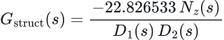
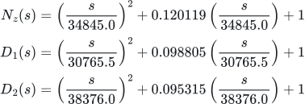
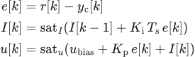
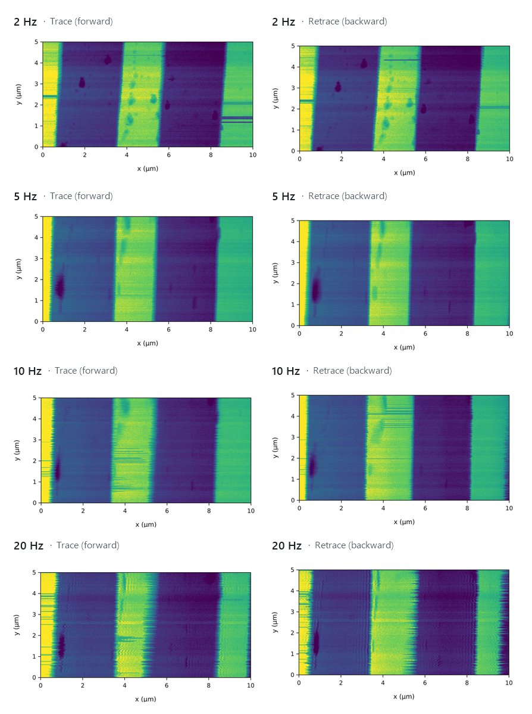
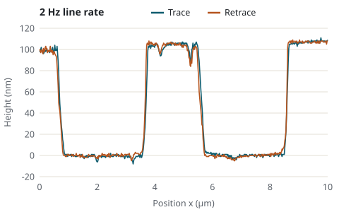
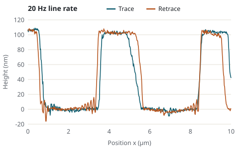
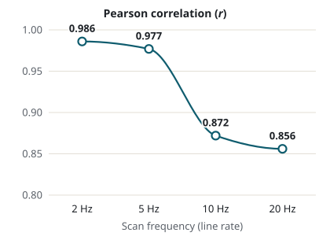
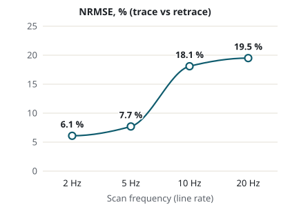
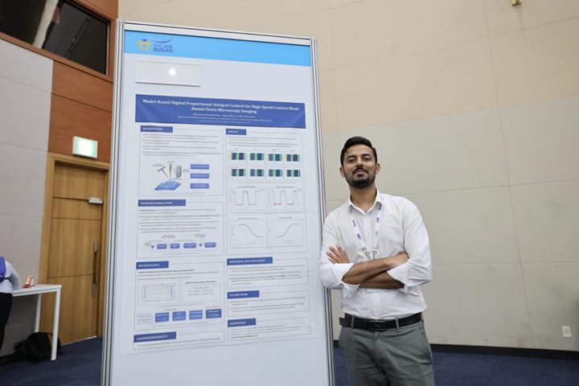

Model-Based Digital PI Control for High-Speed Contact-Mode AFM
System identification, embedded control implementation, and trace–retrace evaluation of the AFM Z-axis feedback loop.
Summary
- Research question
- What closed-loop tracking bandwidth is achievable with digital PI control of the contact-mode AFM Z-axis, and how does the practical tracking limit manifest in trace–retrace fidelity as scan frequency increases?
- What I did
- Measured the contact-mode frequency response, identified a plant model, implemented the PI controller on an STM32, and evaluated scans at different frequencies.
- Key result
- At scan frequencies up to 5 Hz, trace–retrace correlation remained at least 0.977, with NRMSE no greater than 7.7%. At 20 Hz, correlation fell to 0.856 and NRMSE rose to 19.5%, indicating reduced tracking fidelity, particularly near step edges.
Overview
In contact-mode atomic force microscopy (AFM), an X–Y nanostage rasters the sample beneath a cantilever whose tip remains in contact with the surface. An optical lever measures cantilever deflection, while a PI-controlled Z-piezo adjusts the cantilever height to maintain the deflection setpoint. As scan frequency increases, finite Z-axis tracking can reduce agreement between trace and retrace images, particularly near step edges.
This work measures the contact-mode frequency response, identifies the plant dynamics, and implements digital PI control on an STM32. Images acquired at 2, 5, 10 and 20 Hz are evaluated using trace–retrace correlation and normalised root-mean-square error (NRMSE) to quantify image consistency.
Closed-Loop Control of AFM
The contact-mode AFM uses optical-lever sensing to measure cantilever deflection and Z-axis feedback to maintain its setpoint. A laser beam is reflected from the back of the cantilever onto a quadrant photodiode (Hamamatsu S4349); the normalised difference between the upper and lower quadrant pairs gives the vertical deflection. The signal is conditioned by a transimpedance and difference stage, shifted into the ADC input range and sampled by an STM32F407 microcontroller, which computes the control update. The DAC output is amplified by a PA88 high-voltage stage (0–150 V) driving a stacked piezoelectric Z-actuator on the head side, while a voice-coil leaf-spring nanostage rasters the sample in X–Y.

System identification
The contact-mode open-loop response was measured using a 10 mV rms swept sine from 50 Hz to 10 kHz. Measuring with the tip in contact captures the tip–sample interaction.
The response shows a dominant resonance at 4.82 kHz and a second mode at higher frequency. A fourth-order structural model captures the principal magnitude features over 100 Hz–8 kHz. The figure compares measured and modelled magnitude; the phase panel shows the measured response.
![Bode plot, 100 hertz to 8 kilohertz, of the measured contact-mode open-loop response and the magnitude of the fourth-order model. Magnitude is about 27 decibels at low frequency, rises to a resonance peak near 43 decibels at 4.82 kilohertz, dips, shows a second mode near 6 kilohertz and falls to about 26 decibels at 8 kilohertz; the model magnitude follows it closely. The phase panel shows the measured phase only: it starts near plus 180 degrees, falls to about 0 degrees just above the resonance and to about minus 110 degrees at 8 kilohertz.](../assets/img/afm/afm-contact-mode-frequency-response.svg)
Identified contact-mode plant model
Fourth-order structural plant model; the PI controller is excluded.


Nz: lightly damped zero pair (5.55 kHz); D1, D2: structural pole pairs (4.90 kHz and 6.11 kHz).
LaTeX source (copyable)
G_{\mathrm{struct}}(s)=\frac{-22.826533\,N_z(s)}{D_1(s)\,D_2(s)},
\quad
N_z(s)=\left(\frac{s}{34845.0}\right)^2+0.120119\left(\frac{s}{34845.0}\right)+1,
\quad
D_1(s)=\left(\frac{s}{30765.5}\right)^2+0.098805\left(\frac{s}{30765.5}\right)+1,
\quad
D_2(s)=\left(\frac{s}{38376.0}\right)^2+0.095315\left(\frac{s}{38376.0}\right)+1.Controller Design and Implementation
The PI gains were selected by loop shaping against the measured contact-mode frequency response. The dominant 4.82 kHz resonance was taken into account when selecting the controller gains.
The PI controller runs on the STM32F407 at 18.4 kHz, with each update executed in the ADC conversion-complete interrupt. The integral state is limited to reduce wind-up when the drive saturates, while the output is limited to keep the command within the high-voltage amplifier’s operating range.
PI controller

| r[k] | deflection setpoint |
|---|---|
| yc[k] | measured deflection |
| e[k] | tracking error |
| I[k] | integral state |
| u[k] | DAC command to the high-voltage amplifier |
| ubias | output bias |
| Kp, Ki | proportional and integral gains |
| Ts | sample period, 1/(18.4 kHz) ≈ 54.3 µs |
| satI(·) | clamps its argument to the integral-state limits |
| satu(·) | clamps its argument to the output limits |
Experiments
Imaging at increasing scan rates was evaluated by trace–retrace consistency. The sample was an HS-100MG step-height standard with a nominal step height of 100 nm. Each 10 × 5 µm field was scanned at 2, 5, 10 and 20 Hz, and every line was acquired in both directions. After mean-plane levelling, the trace and retrace topographies were compared using the Pearson correlation coefficient r and the normalised root-mean-square error (NRMSE).
Scope of the metric
Trace–retrace agreement compares the two scan directions with each other. It does not independently measure absolute accuracy or lateral resolution, and instrument and sample effects other than the Z-axis loop can also influence it.
Results
Trace and retrace remained highly consistent up to 5 Hz (r ≥ 0.977, NRMSE ≤ 7.7 %). Consistency decreased markedly between 5 and 10 Hz, reaching r = 0.856 and NRMSE 19.5 % at 20 Hz. The discrepancy is concentrated at the step edges rather than distributed across the field. This pattern is consistent with limited Z-axis tracking at abrupt height changes, although the metric alone does not isolate the controller.











Ongoing research
Current work extends the contact-mode AFM study toward higher scan rates by addressing the 4.82 kHz structural resonance that constrains controller design. A digital notch filter has been implemented in a subsequent STM32 firmware build with an approximately 103 kHz sampling rate. Its real-time operation and effects on closed-loop stability, Z-axis tracking, and image quality are being evaluated. The scans presented above were acquired without notch compensation.
Model-predictive control is also being investigated using the identified plant model; its evaluation so far has been limited to simulation. The next experimental comparison will assess the existing PI controller against PI control with notch compensation under matched scanning conditions. Frequency-response measurements and trace–retrace image comparisons will be used to determine whether the usable scan rate improves.
Output and acknowledgements
M. M. Khan, T. Abbas and K. H. Park, “Model-Based Digital Proportional-Integral Control for High-Speed Contact-Mode Atomic Force Microscopy Imaging”, poster presentation, 23rd IFAC World Congress, Busan, Republic of Korea, 23–28 August 2026.
Conducted in the Dynamics & Control Lab under the supervision of Prof. Kyi Hwan Park and supported by a GIST research project grant.

